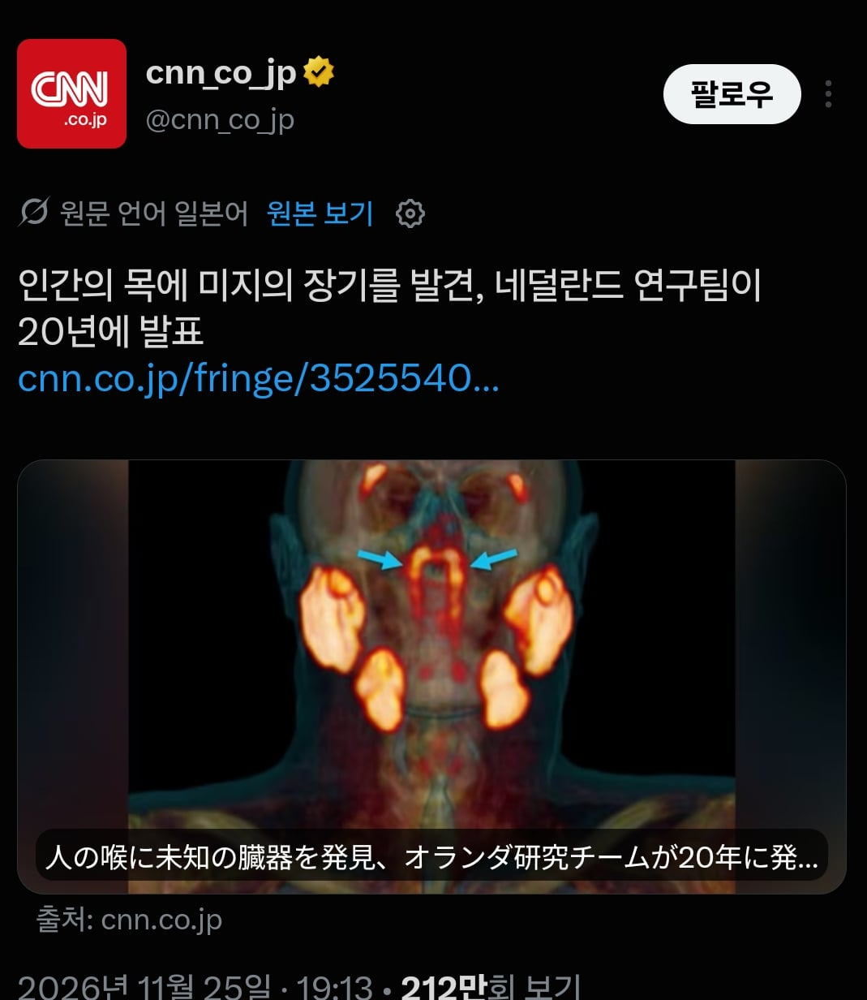
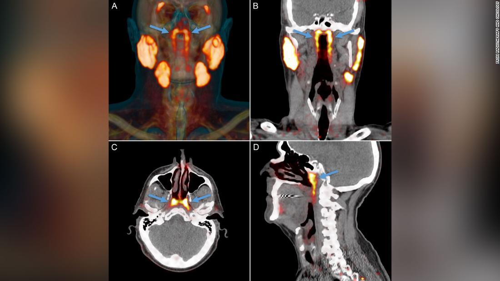

저희가 숨겨 둔 이스터에그를 발견하셔서, 패치 내역에 공개하게 되었습니다.
업데이트 Ver.1.12
・인체에 새로운 장기 「tubarial glands」를 추가
- 초음파나 CT, MRI로는 보이지 않습니다.
- 코 내시경이나 특수 방사성 의약품(PSMA) 스캔을 통해서만 확인 가능합니다.
- 용도는 침샘입니다.
상세 패치 내역
https://www.cnn.co.jp/fringe/35255405.html

아직 찾지 못한 이스터에그 n개 남았습니다.
인류 여러분
감사합니다.
날씨가 너무 추워요